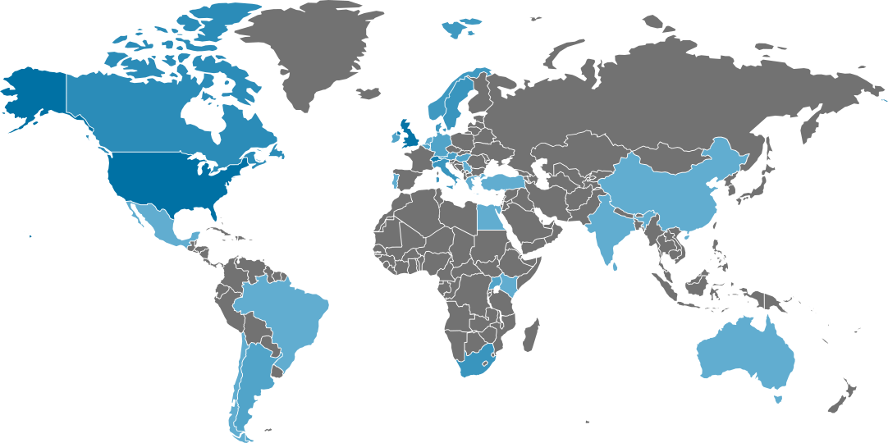

GLOBAL MIGRATION
AND HEALTH
TRAINING/COURSES
REPOSITORY
This course/training portal is a repository of all
Migration and Health Related courses and traings obtained from IOM's courses/training database.
